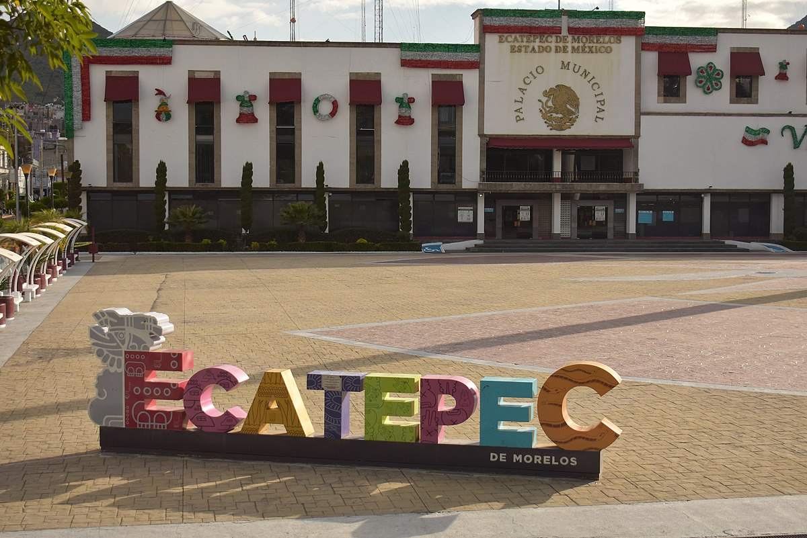
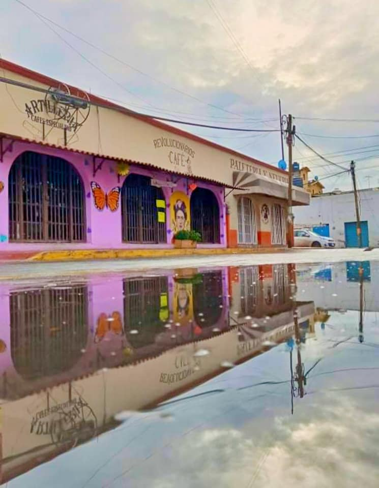

The name "Ecatepec" is derived from Nahuatl, and means "windy hill" or "hill devoted to Ehecatl."
It was also an alternative name or invocation to Quetzalcoatl.
Ecatepec was the site of an Aztec kingdom established in the 12th cent.
Ecatepec was considered a "República de Indios" (Indian Republic) in 1560, allowing the village to maintain
a certain amount of autonomy and keeping the succession of tlatoanis or chiefs. However, in the first part of the 17th century,
this was changed to a mayorship, with the Spanish administrating, along with the communities of Zumpango and Xalostoc.
National hero José María Morelos y Pavón was executed in Ecatepec in 1815 by the Spanish Army during the Mexican War of Independence a monument to him stands in the city.
The house in which he was executed is now a museum, Museo Casa de Morelos.
The municipality was officially created on October 13, 1874.
On October 1, 1877, San Cristóbal Ecatepec was declared a village and "de Morelos" was added to its name.

Ecatepec Municipal Palace
You can find a great variety of places that offers many options of food, buy I have a favorite place: Revolucionarios Café.
This is a place where you can go with your family, friends and coworkers to enjoy a good coffee, if you want more than a coffee there are many
oher options like enchiladas, sandwiches, salads, etc.
You can find them in three different places.

Revolucionarios Cafe